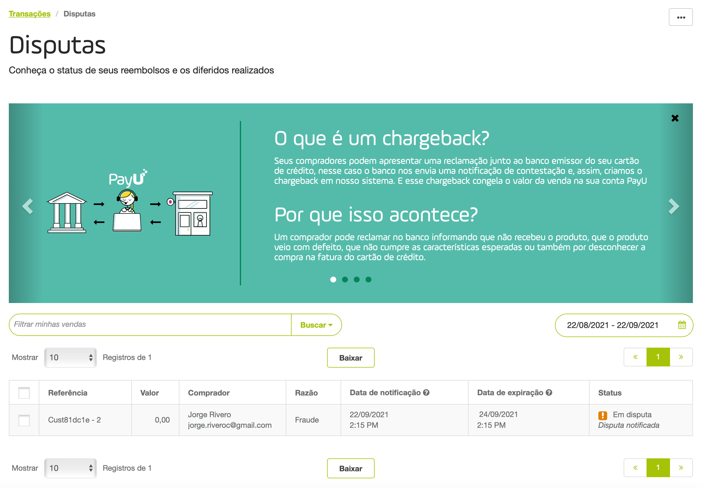
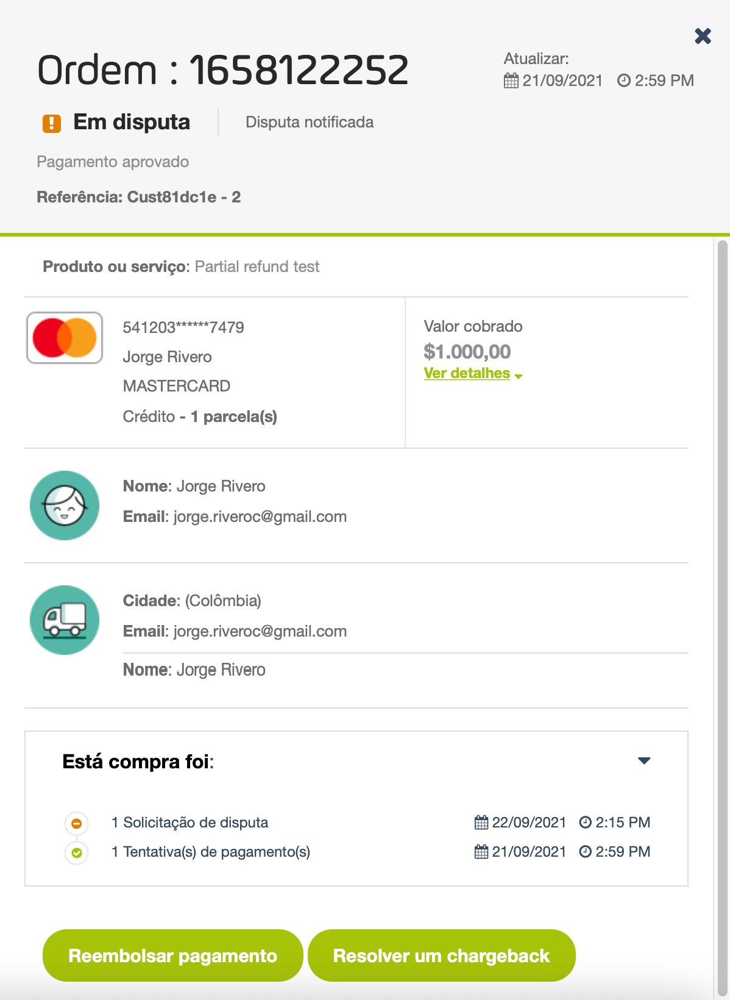
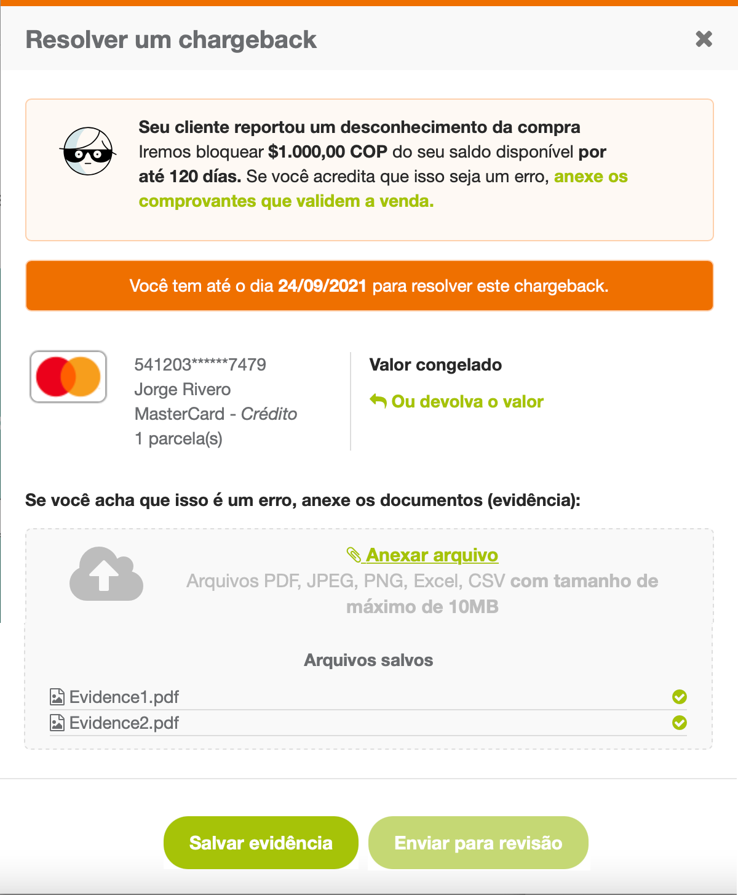
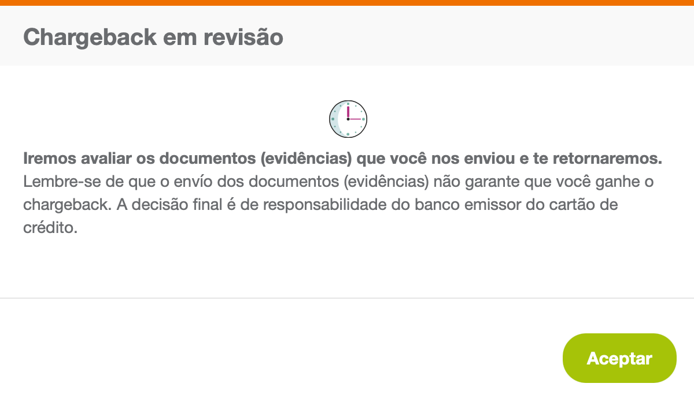

Disputas

Observação
Para termos introdutórios sobre uma disputa, consulte este artigo.Permissão necessária
Para ter acesso a este módulo, você precisa ter um perfil com a seguinte permissão habilitada:
- Relatórios > Reembolsos e disputas
- Relatórios > Resolver disputas com compradores (gerenciar chargeback)
Consulte Perfis e permissões para obter mais informações.
Por que é importante responder a uma disputa?
- O comércio pode gerar desconfiança ao cliente.
- Se você não resolver as disputas, PayU retirará o valor de sua conta.
- O fundo de reserva pode ser maior pela área de risco.
- Isso prejudica a pontuação do código PayU perante as redes de pagamento.
- O valor em disputa ficará congelado até que ele seja resolvido.
É importante responder a uma disputa fornecendo provas antes do prazo estipulado pelo banco. Após o prazo, não é possível fazer o upload das provas correspondentes a uma disputa.
Para obter mais informações sobre os prazos definidos, consulte dias máximos para fornecer evidências.
Como resolver disputas?
Uma disputa é iniciada quando um comprador desconhece uma cobrança feita em seu cartão de crédito. Assim que o banco é notificado, começa o processo formal para determinar a validade da compra.
Dica
Se você tem os dados do titular do cartão, a melhor forma de gerenciar um processo de disputa é entrando em contato com ele. Se o motivo da disputa é simplesmente desconhecimento, você pode pedir ao titular do cartão que fale com seu banco para retirar a queixa e para que o processo de disputa se resolva a seu favor.-
Quando somos notificados pelo banco de que um processo de disputa foi iniciado, você é notificado sobre esse processo. TPara configurar o e-mail ou URL para receber notificações de disputa, consulte Configurações técnicas.
-
Faça login em sua conta PayU. No menu esquerdo, expanda o menu Transações e selecione Disputas.

- O módulo Disputas será aberto. Role a página para baixo e localize a disputa que você abriu. Se necessário, você pode usar os filtros disponíveis para localizar sua disputa.

- Os detalhes da ordem aparecem à direita da tela. Clique Resolve um chargeback no final do painel.

- Na janela pop-up, você encontrará os detalhes sobre o motivo pelo qual seu cliente solicitou o processo de disputa e o prazo para fornecer evidências para solucioná-lo. Clique no link Anexar arquivo para fazer o upload de todas as evidências que você tem.

Observação
Se você aceitar que a disputa não é um erro, você pode iniciar um processo de Reembolso clicando em Ou devolva o valor.- Faça upload dos arquivos de evidências para resolver a disputa e clique em Salvar evidência. É obrigatório salvar a evidência antes de enviá-la para revisão.
Os arquivos a serem carregados na seção de evidências não devem ter tamanho superior a 10 MB e devem ser arquivos PDF.

Quando terminar, clique em Enviar para revisão.
- Uma janela de confirmação aparecerá informando que a evidência foi enviada.

- Nesse momento, enviamos os documentos ao banco emissor ou à rede que processou a transação, de quem depende a resolução do caso.
O caso de disputa pode resultar em ganho (sem estorno), perda (estorno) ou reembolso. No caso de devoluções, a loja é que faz a devolução ao comprador e o banco não gera o estorno. Consulte estados de disputa para conhecer todos os estados de uma disputa.
Observação
Se você ativou Garantia Antifraude, quando o estorno estiver sujeito à cobertura da garantia, o PayU assume os valores debitados de sua conta. Neste caso, o status desta disputa é Contracargada (Perda) Com garantia antifraude.Quando a entidade financeira comunica o resultado da disputa, o caso é atualizado automaticamente no Módulo PayU.